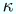

dvioutにおけるトラブルシューティング
May, 2021
dvioutのインストール --- いくつかのヒント
dvioutにおける小ヒント集
Windowsにおける日本語TeX
のインストールのチェック
DVIwareとしてのdviout
dvioutでのプレゼンテーション
Susie plug-inと画像フォーマット
目次
1. はじめに（必読）
2. 代表的なトラブルとメッセージ（ここから調べます）
3. Cannot resolve Fonts
4. Ghostscriptを使ったPostScript画像表示に失敗する
5. いくつかのトラブルの例と原因
6. 基本動作環境の情報の出力例
誤りや補足すべき点があればお知らせ下さい --> dviout@tug.org
1. はじめに
dvioutを使っていて起きるトラブルの代表的なものについて、これはその解決のためのガイドです。
まず全般的な注意です。
- トラブルの原因で最も多いものは、環境変数やパラメータの設定ミスです。
特にスペルミス、あるいは、思い違いによる設定ミスです（インストール時のトラブルの大半を占めますので、再度チェックを）。
- 多くのヒントが dviout の On-line Help（Help → Help Topics
→ ...） から得られます。
特に、Q&Aの部分は、該当するトラブルについての解説が載っている可能性が大なのでチェックが必要です。
- 自分で解決できずに TeXフォーラム や TeX
関連の掲示板などで質問をする事になった場合、動作環境の正確な情報が必要です（設定パラメータを手でタイプして書き写したりしては、二重のミスにも成りかねませんので避けてください）。
Ver.3.12.1 から Help → System Info. → [Copy] で、dviout の基本動作環境の（基本的な環境変数を含む）
情報がクリップボードにコピーできるようになりました。
質問の際は、起こったトラブルやそれに関連する情報（以下の重要データなど）の他に、この（最も重要で基本的なデータの）基本動作環境の情報も合わせて報告してください。
- TeXフォーラム や TeX
関連の掲示板での質問は、上に書いたような基本事項を守っている限り歓迎されるでしょう。
質問後、アドバイスが得られて、あるいは、自分で解決してしまった場合も、多くの人が関心を持って経過を見ています。質問者以外にその解決の理由が分かるように結果の報告がなされることが要望されます（間違った設定に気づいて修正した場合は、その間違っていた設定の報告です）。
- フォントの自動作成の失敗(Cannot resolve Fonts)、取り込みPostScript画像の表示の失敗、が次項と合わせて、問い合わせの多い三大トラブルです。
最初の二つにおいては、dvioutが他のプログラムを動かしているので、原因の切り分けが解決の第一歩です。この失敗時に、原因の切り分けのためにやるべき事やチェック事項、および、その主な原因が書かれたHelpが、通常は表示されます。原因が不明ならば必ずそのチェック事項（ここにも、より詳しく書いてあります）を確かめてください。
dviout Mailing List や TeX
関連の掲示板などでトラブルの質問を受けた場合、これらのチェック事項の結果の報告が無いと、（チェック事項を確かめてください、ということになり）無駄な手順がかかります。
- 表示には問題ないが印刷がおかしいというトラブル。これもプリンタやそのドライバが絡むので、原因の切り分けが必要です。チェック事項があり、対処方法もいく
つかありますので注意。
2. 代表的なトラブルとエラーメッセージ
2.1. 一般的な注意点
- WindowsNT/2000/XPの場合の注意
- 設定したユーザ(Administratorなど）と実際のユーザとが異なっているのが原因で、環境変数やディレクトリの読み書き権限が意図したものになっていなかった。
-
- 標準でないシェルを使っている場合の注意
- フォントの自動生成などでdviout
が他のプログラムを起動したときの環境変数が意図したものになっていなかった。
Cygwinなどを使っている場合に要注意。
-
- パラメータの設定に関する注意
- Option → Setup Parameters..... の各シートで書き換えたパラメータは、[Ok]
または [適用]を押さないと有効になりません。また、[Save]
を押さないと、記録されず、次回のdviout起動時に無効になります。さらに、[Registry]のシートでの対応するパラメータに
+
のチェックがついていないと、記録された値を、（次回以降の）dvioutで適用しないことを意味します。
-
- TeXのパッケージ・システムが正しくインストールされているか？
- 簡単なTeXファイルをDVIファイルに変換してみましょう。
このようにテストをするのがよいでしょう。
従来使っていたTeXのシステムを削除して、新たにTeXのパッケージを導入する場合、元のTeX
のシステムを正しくアンインストールしないと導入に失敗する場合があります。
アンインストールとはTeXのシステムを削除することをいうのではありません。最も重要なのは、様々な環境、たとえば環境変数（たとえば、TEXMF, TEXMFMAIN, TEXMFCNF）などを定義していたら、それを元に戻す（未定義にする）ことです。
従来のTeXのシステム関するドキュメントと新たなTeXのシステムに関するドキュメントの両方を参照する必要があります。
-
- 環境変数が意図したものになっているか？
- Help → System Info で表示される環境変数の値（" " で囲まれている）に注意しましょう（[Copy]を押してクリップボードにコピーし、エディタなどに貼り付けてから見るとよいでしょう） 。
たとえば、末尾に不要な空白が着いていて、
エラーの原因となることがあります。
上の表示に環境変数 TMP や TEMP が表示される場合は、それらの設定が原因で問題が起きる可能性が高いことを示しています（全角文字や空白が含まれている場合は修正しましょう）。
-
- 意図したDVIファイルであるか？
- 誤りのあるTeXのソースを用いたり、インストールが不完全などの理由で、dvioutで表示しようとするDVIファイルが意図したものでないことがあります。DVIファイルへの変換時のログファイルをチェックしてみましょう。
2.2. フォントに関するトラブル
- Terminate Automatic Font Generation?
- これは、作成して表示しようとして失敗したフォントが何個か（4つ程度）あると表示され、以降見つからないフォントがあってもフォント生成を試みなくて良いか、
を尋ねるダイアログです（設定が間違っている場合が多く、
全てのフォントの自動生成の失敗の終了を待つと時間がかかるからです）。No
と答えたあと、また何個か失敗すると同じダイアログが出ます。
- (A)bort Automatic Font Generation for this file?
- (R)etry it for the investigation by executing GEN_TMP.BAT?
(I)gnore this font?
- Retryの選択は（July 8, 2001以降サポート）、フォントの自動作成失敗の原因を知るための重要なステップです。次項を参照してください。Abort/Ignoreの選択は、前項の
Yes/No の選択と同じです。
- Cannot resolve Fonts
- 必要なフォントを得られなかったのでプレビューが出来ません（Ver.3.12より前）。見つからなかったフォントの文字は表示されません（Ver.3.12以降）。
-
- フォントをインストールしたのに反映されない
「fi」などの合字や「-」等、一部の特殊文字が「□」などになって正常に表示されない
正常に表示されない文字や記号がある
明朝の文字がゴシックで表示される
ある和文フォントの文字がゴシックで表示される
ある和文フォントの文字が明朝の斜体で表示される
Cannot find font file for ...! A default FONT will be used!
Font Mismatch
fail to read FONT
Corrupt font ...
Unpack Error ...
check sum doesn't match in Font
2.3. プレビューにおけるトラブル
Landscape文書（横置き紙面）なのに、Portrait（縦置き）紙面が表示される
作成した文書サイズと異なる紙面サイズとなる
色づけをした文字の輪郭の色がおかしく、汚い表示になる
拡大して見ると、文字列検索やHyperTeXでの色づけが消える
文字列コピーで、記号などが化けて切り取られる
間違った文字列が検索される
表示画面の文字をクリックしても所定の動作をしない
cmodeをpatch2 あるいは patch とすると、表示の文字などが綺麗でない
小さなカラー文字のベースラインが揃っていない
エディターへの直接コピー機能が動作しない
Raster buffer size -br: 400 K in [System] is too small.
Can't make tmp-batch file.
2.4. 画像取り込みや出力およびカラー文字におけるトラブル
Failed to make <file-name>.bmp by the command
Failed to make <file-name>.pbm by the command
- Ghostscriptによる画像生成に失敗する
PostScript画像の表示がおかしい
取り込まれた画像の縦横比がおかしい
縦書きのとき、取り込んだ画像が回転してしまう
カラーのPostScript画像が白黒で表示される
Ghostscriptで生成された画像が再利用されない
解像度を上げたり拡大によってカラーの取り込み画像が消える
画像の重ね合わせが望み通りの結果にならない
BMP/JPG/TIFF/WMF/EMF/PNGなどのグラフィックファイルが取り込めない
Bounding Boxを記した *.bb ファイルが作成できない
PNG画像での出力ができない
画像出力で、カラー文字やカラー画像が消えてしまう
複数ページに続いた文字の色づけが有効でない
複数ページに続いた紙面の背景色が有効にならない
縦書きでの tpic specials で、dvips と互換にしたい
2.5. 印刷におけるトラブル
表示は問題ないが、印刷がおかしい
- Windowsのプリンタドライバを使っている場合（印刷のダイアログで
dviprt にチェックをつけないデフォルトの印刷方法）、Option → Setup
Parameters... → [Graphic] の color specials: の右の欄(cmode)が、
auto mode(p2) になっていたら patch2
に変更し、表示を最大に拡大する（Display → Size → Magnify
を拡大しなくなるまで複数回選択）。この状態で表示と印刷とを比べることによって、プリンタドライバのチェックをし（cmode
については、DVIwareとしてのdviout
を参照）、次の３項のうち該当するものを参照して下さい。
cmode を patch2
としたテストで、表示は問題ないが、印刷がおかしい
cmode を auto mode(p2) としたときの表示は正常だが、patch2
としたときの表示がおかしい
cmode を auto mode(rep)としたときの表示は正常だが、印刷がおかしい
カラー画像の白黒での印刷がおかしい
印刷が遅い
Use Printer resolution to print?
Retry the print setting?
印刷された文字と紙面のサイズが異常に小さい／大きい
dviprt機能をつかった ESC/Page での印刷に失敗する
プリンタの設定を両面印刷にしたが，両面印刷にならない
dvioutから複数ページをFAX送信したが，1ページ毎に別に送られてしまう
自動的に解像度を変える印刷のあと，ページサイズなどがおかしくなる
2.6. 起動におけるトラブル
dviout が正常に立ち上がらない
DVIファイルのアイコンのダブルクリックでdvioutが起動しない
bad parameter -mag=-3
3. Cannot resolve Fonts
「どのようなフォントが必要であったか」の情報に注意しましょう（cf. [4]）
cmr17.360(1800)
Searched c:\usr\local\share\texmf\tfm\\cmr17.tfm
Searched c:\usr\local\share\texmf\pk\\cmr17.360pk
Searched c:\usr\local\share\texmf\pk\\cmr17.361pk
Searched c:\usr\local\share\texmf\pk\\cmr17.359pk
Searched c:\usr\local\share\texmf\vf\\cmr17.vf
のような表示(重要データ0.1)は、dvioutがサーチしたファイルを示しています。\\ は \...\...\ のよ
うに間が省略されていると考えることができます（間が無くてもよい）。
- 注意:
- 拡張子がcmr17.tfm のように tfm となっているTFMファイルは、TrueTypeフォントを表示するために用いられるメトリックファイルです。
よって、dviout が TEXPK に基づいてフォントをサーチして cmr17.tfm を見つけても、
対応するTrueTypeフォントがWindowsに登録されていなければ「見つからな かった」とみなされ、TEXPK の指定に従ってサーチを続けます（cf. dviout for Windowsが使うフォント、 乙部さんによるTrueTypeフォント利用に関する考察）。
この例では、cmr17
という名前の解像度 360dpi(= dots/inch)
のフォントが実際には必要でした。
必要であったのはPKフォントで、ファイル名は、この場合
cmr17.360pk です（末尾が pk
の最初のものであることが多い）。
計算の丸め誤差を考慮して、その前後の解像度のフォントも検索されています。
原因は、次の 1. 2. のいずれかです。
- 1. フォントは生成されたが、フォントのサーチパスの設定が違っていて見つけることが出来ない
- ・ -TEXROOT: -TEXPK: の設定ミス
- 2. フォント生成に失敗した（以下の原因が主なもの）
- 1. TeX のパッケージのインストールのミス
- ここからTeXのインストールの基本的なチェックができます。
- 例：
- 上書きインストールを行ったが、インストールを忘れたパッケージがあった
- 例：
- times.sty や txfonts などの標準でないフォント（たとえば、ptmr... という名前のフォント）を使っていて、その設定が不十分（cf. 奥村さんによるnewtx, txfontsのガイド）。
この場合は、必要なパッケージのインストールのほか、ps2pk/gsftopk によるフォント作成が可能になっていること、Ghostscriptにパスが通っていて、環境変数 GS_LIB が正しく設定されていること（Ghostscript が Ver.8.11 またはそれ以降ならば、設定しなくてもよい）などが要請されます。
- 2. PATH の設定ミス
-
- 例：
- 正しく設定したと思ったが、スペルミスがあった
- 例：
- 別のTeXのシステム（eg. Cygwin）の方に先にパスが通っていた
- 例：
- TeXに関連するフォルダの名前に原因があった（和文文字や空白を含んだり，あるいは8文字より長いと問題が生じる可能性があります）。
- 3. 環境変数 TEXMFMAIN, TEXMFCNF の設定ミス
- 例：
- 旧来の環境変数 TEXMF を消していなかった(TEXMFMAIN と矛盾)
- 例：
- mule/meadow からdvioutを動かしていて、角藤版中の sh.exe を使ったため、METAFONT動作時の環境変数が正しくなかった（この sh.exe は Windows95/98/Me では使用不可）
>
- 例：
- WindowsNT/2000/XPでAdministratorと実際のユーザとで環境変数が異なっていた
- 4. 環境変数 TEMP または TMP の（設定）ミス
- 例：
- 両方設定されていたが、一方が存在しない、あるいは書き込めないディレクトリになっていた
- 例：
- 環境変数 TMP の設定文字列に空白が入っていた
- 5. -gen: の設定ミス
- 例：
- mktexpk.exe が２ヶ所にあって、正しくない方を設定していた
- 例：
- パス名に空白が入っているときは、ショートパス名に直してください
- 6. texmf.cnf の設定ミス（普通はデフォルトで問題なし）
- 例：
- texmf.cnf は存在しますか（存在しない → インストールミス）
- 例：
- $TEXMF を間違って変更してしまった
この項の意味が分からなければ、オリジナルのままのはず。
オリジナルから変えていたならオリジナルの texmf.cnf との差分(重要データ0.2)を（例えば、fc を使って）調べてみましょう
オリジナルの texmf.cnf のバックアップを取っていなかった場合は、再インストールしましょう
- 7. 解像度(dpi)の設定ミス
- 例：
- 解像度 96 dpi で出力しようとしたが、そのための設定がされていないtexmf.cnf に
$MAKETEXPK_MODE_96 = atarins
のような mode の定義が欠けている、あるいは、
場合によっては -gen: の定義で、--mfmode の設定を書く、などの対処もあります
- 8. 作成できないフォントであった
- 例：
- METAFONT のソースが無い、などの理由で作成不可能なフォントの場合、フォント代替機能を使って、別のフォントで代用することが可能です
原因の突き止め方は On-line Help ([Cannot resolve Fonts])にあるので、それを実行してみましょう。
具体的には、
- [1]
- 環境変数 TMP または TEMP
で示されたディレクトリに GEN_TMP.BAT が存在するならばそれを実行し、フォントが正しく作成されるか、あるいはどのようなエラーになるかを調べる。
なお、July 12, 2001以降の版の dviout では、エラー発生時に[再試行]ボタンでこのテストが実行できます。
Cannot resolve Fonts のメッセージが表示されている時点で、dviout を抜けないで実行するの
がよい。
なお、GEN_TMP.BAT は、dviout がフォント作成に用いたコマンドのコピーです。
- 具体的には、システムから スタート → プログラム → （アクセサリー → ）コマンドプロンプト または スタート →
ファイル名を指定して実行で cmd
を実行するとコマンドが入力できるWindowが開きます。
- set と入力すると、全ての環境変数とその値が表示されます。
- 環境変数 TMP および TEMP が、c:\windows\temp であると、c:\windows\temp\GEN_TMP.BATを実行します。
具体的には、次のように入力します。
c:\windows\temp\GEN_TMP
- 実行後に表示されたメッセージなどは、クリップボードにコピーできます（Windowのボタン、または、マウスボタンを使う）ので、エディター（メモ帳など）を開いておいて、結果をそこに貼り付けておきます。
GEN_TMP.BAT が存在しない
-
環境変数 TMP と TEMP の設定で定義されたディレクトリが書き込み可能になっていますか？
- -gen: が正しく設定されていますか？ [5] へ
バッチファイルを動かすと、フォントが生成された、あるいは既に存在している、と表示された
再度同じ DVI ファイルを dviout で表示してみましょう
- 同じフォントに関し同じエラーが起きた
TEXROOT, TEXPK の設定ミスと思われます。以下の[3] → [6] → [7]へ
- そのフォントはエラーにならず、DVI で処理された
UNIX類似環境などの独自SHELLを使っていませんか？ その際の環境変数などをチェックしましょう（さらに、[7]へ）
バッチファイルを動かしたが、エラーメッセージ(最重要データ1)が出てフォントが生成されない
- [2]
- Help → Other Info. → Font Info. の表示(重要データ2)において、作成できなかったフォントは Virtual Font で使われているものか（このときは、そのフォント名がインデントされた表示となり、その上のインデントされていないフォント名の右端に Virtual と表示される）、そうでない（通常の）フォントかをチェックする（dviout Ver.3.12以降）。
- 後者の場合は、PKフォントがMETAFONT(mf.exe)を使って作成されるものが多い(cm で始まるフォントは、この可能性が大）。
- 前者の場合は、PKフォントが ps2pk/gsftopk, Ghostscript などを使って作成されるものが多く、インストールパッケージやインストール方法が正しくないと、作成に失敗することがある。
- [3]
- 実際にフォントがどこに作成されているか、あるいは作成されていないかを調べる。
Windows の検索機能を用いましょう。今の例では、cmr17.360pk を検索（タイムスタンプに注意）。
- [4]
- プログラム kpsewhich でフォントを調べる。
作成されるはずのものが、cmr17.360pk であったなら（"Cannot resolve Fonts" という情報Windowsで、トップが cmr17.360(1800) となっていれば、それを意味します。1800は360の5倍にあたります）
kpsewhich cmr17.360pk
をコマンドラインから実行してみる(結果は、重要データ4.1)。kpsewhich にパスが通っていること
をチェックし、以下を実行して表示される内容を記録しておく。
kpsewhich --expand-braces $TEXMF
kpsewhich --expand-braces $MFINPUTS
kpsewhich --expand-braces $MAKETEX_MODE
kpsewhich --expand-braces $PKFONTS
最後に以下を cmr10 のままで実行してみる（エラーの場合は、そのメッセージは重要データ4.2）
mktexpk cmr10 305 300 305/300
正しく生成出来た場合は、作成されたファイル cmr10.305pk は不要なので、（次回のチェックのため）削除します
（作成されたファイル名がフルパスで表示されますが、フォルダの区切り記号が
\ でなくて / になっているので注意）。
最初から存在していた場合は、削除または名前を一時別のものに変えてから生成する。
- [5]
- パラメータ -gen: の設定のチェック
Option → Setup Papameters... → [Font2] で [gen:] のボタンを押して自動設定したものと比較
- 例：
- 自動設定出来ない
mktexpk.exe（あるいは MakeTeXPK.exe）は、固定ディスク内のみサーチされます。
- 例：
- 複数箇所に mktexpk.exe があると、正しくない方が設定される可能性があります。
異なったものに自動設定された場合、[Ok]で抜け、再度表示してみる（[Save]を押さない限り、次回起動する dviout に設定が引き継がれず、元に戻る。正常になれば、[Font2]に戻って[Save]）。
- [6]
- パラメータ -TEXROOT: -TEXPK: のチェック（cf. On-line Help）
Help → System Info.（があれば、それ）を選択して [Copy] を押し、エディター（メモ帳など）に張り付けておく（重要データ6:現在の dviout の基本的な動作環境情報が記されている）。
June 16, 2001 以降の日付の dviout として、Option → Setup Papameters... → [Font] で[Guess] ボタンを押します。
[6-0]
環境変数 TEXMF と TEXMFMAIN の両方が定義されています!
と表示された場合は、上の 2.3 を参照してください（→ 環境変数 TEXMF の定義を消してチェックしてみる）。
[6-1]
標準的な日本語TeX環境が検知されました．
それにあった標準設定を選択します．
と表示された場合は、[はい(Y)] を選択し、[Ok] を押して再度表示をチェックしてみる。
[6-2] 一方、タイトルが「パラメータ TEXROOT/TEXPK/L の推測」または
「Examine Fonts」のダイアログが現れた場合は、(N) を選ぶと
デフォルト値が設定されるので、[Ok] を押して再度表示をチェックしてみる。
[6-3]
そうでない場合は、
TEXROOT: ^T\fonts
TEXPK: ^r\tfm\\^s.tfm;^r\pk\\^s.^dpk;^r\vf\\^s.vf
と設定して、[Ok] を押し、表示をチェックする。
注意．環境変数 TEXMFMAIN（または TEXMF）が定義されていない場合は、TEXROOT: が設定されない場合があるので、上記 ^T の部分は TeX がインストールされているディレクトリを直接指定して下さい。たとえば
TEXROOT: c:\usr\local\share\texmf\fonts
などとなります。
[6-1], [6-2], [6-3] の各場合、[Guess] ボタンを押して、デフォルト値を用いず、TEXROOT と TEXPK とを推測設定したものでチェックし、元の設定値との差を比べる。
- [7]
- Option → Setup Parameters... → [System] の show child Windows のチェックをつけて、[Ok]で抜け、再度表示を行ってみる。
- [1]
- Optinon → Setup papameters... → [Graphic] の Ghostscript のところで On がチェックされていますか？ また、Display → Graphic もチェックされていますか？
問題なければ、以下の該当するものをチェックして下さい。なお、この項は、jpeg/bmpなどの
PostScript以外の画像読み込みとは無関係です。
- [2]
- 表示 Unknown special:... が出る場合
dviout でサポートしている \special を用いてください（cf. On-line Help）
- [3]
- 表示 unable to open foo.ps(PS) が出る場合
読み込むべきPostScriptファイルが見つかりません。
DVIファイルと同じディレクトリに存在しますか？（拡張子を含めたファイル名やフォルダに注意）
別のディレクトリからも探すように設定している場合は、Optinon → Setup papameters...
→ [Graphic] → -gdat: の設定に注意
- [4]
- 表示 Cannot execute gswin32c(2) などが出て、Ghostscriptが実行できない場合
-gsx: の指定をチェックしてください（以下の [5] の 2. も参照）。
- [5]
- 次のような表示が出る場合（ただし [3], [4]に該当する場合は、そちらを参照）
Failed to make foo.bmp (または foo.pbm) by the command
C:\GS\GS7.00\BIN\gswin32c.exe @tmp$.@@@
The file tmp$.@@@ is a parameter file
Ghostscriptを使って、PostScriptファイルから、画像のデータファイルが作成できなかったこと
を示しています。Ghostscript側の設定に問題がある可能性が大ですが、原因は...
- 例：
- Ghostscript用のライブラリのパスが正しく設定されていなかった
Ghostscriptのマニュアルを参照し、環境変数の設定などに注意してください。
- 例：
- Ghostscriptが処理できないパラメータ、あるいはPostScriptファイルであった。
多くの画像ソフトやWindowsのPostScriptドライバーは正しくないEPSFファイルを出力します。
また、プレビュー画像などのバイナリデータを先頭につけているEPSFファイルは、正しく処理できないことがあります。
このときは付属のプログラム bmc を使って先頭のバイナリデータの削除ができます（bmc -p foo.ps のように、コマンドプロンプトから使います）。
PSTricks などの特殊なパッケージを用いた場合にも処理できないことがあります。
- 例：
- 上記エラーメッセージのfooの部分が、tmppsxx でxx の部分が数字の時
閉じた画像描画生成ではないPostScriptのコードがそのままDVIファイルに埋め込まれている可能性があります（前の例と同じです）。dviout Ver.3.15 以降では、Alt+OS [Graphic] で Direct PS のチェックをはずすと、これを無視できます。
- 例えば、hyperref.sty の dvips オプションを使ってPDFを生成する途中段階のDVIファイルを作成すると、HyperTeX の既定にないdvips専用のPostScriptコードに変換されるため、このようなことが起こります。dviout での表示で、以下の Warning が出ることが多い。
Unknown special:! /DvipsToPDF {72.27 mul Resolution dvi } def
- 例：
- パラメータ -GIF:で指定したraw PBMファイル（または、BMPファイル）の出力をサポートしていないGhostscriptを用いたため、そのファイルの作成ができなかった
- 例：
- DVIファイルのあるディレクトリ、または -gdat: の設定に注意。
-gdat: のパスの指定は、空白を含んではいけません（含む場合は、ショートパス名）設定した場合、最初のパス名のディレクトリは書き込みが出来なくてはなりません。
- 例：
- パラメータ -gsx: でのGhostscriptのパスの指定は、空白を含んではいけません（含む場合は、ショートパス名）。
- 例：
- PostScript以外のjpeg 画像などを取り込もうとしてこのエラーが出た。
jpegファイルをそのまま扱えないdvips用の設定になっているため、jpegファイルをPostScriptファイルとして処理するようにDVIファイルに書かれてしまっています。
dvioutのパッケージに付属のdviout.def, graphics.cfg, color.cfg を正しくインストールし直し、DVIファイルも作り直してください。
- たとえば、parameter file が tmp$.@@@ で、C:\GS\GS7.00\BIN\gswin32c.exe が実行ファイルであった上記のような場合、エラーで中断した状態からMS-DOS Windowを開き、DVIファイルの存在するディレクトリに移って以下を実行してみて下さい（tmp$.@@@ の先頭に @ を付けます）。
表示されるエラーメッセージ（重要データ1）は、原因解明に役立つでしょう。
やり方は、このときと同様です。
C:\GS\GS7.00\BIN\gswin32c @tmp$.@@@
もし正常に終了するならば、dviout が Ghostscript を呼ぶときの環境設定（シェル、
リソース状況、環境変数など）に問題があるでしょう。
-
Optinon → Setup papameters... → [Graphic] でボタン [gsx:] を押して、元の設定との違い
があるかどうかをチェック（Ghostscriptが二つ以上存在する場合は注意）。
ファイルのパス名の後に、ライブラリのパラメータがついた場合は、Ghostscript が Ver.8.11 より前のものか、あるいは環境変数GS_LIBが未設定
-
Ghostscript（GhostViewではありません）が正常に実行されるか、チェック。具体的には、
Ghostscript のディレクトリにある tiger.ps （最近は、tiger.eps と名前が変わりました）などのPSファイルをコマンドラインから表示してみる。
エラーの時のメッセージ（重要データ3）は有益。上の例では、以下を実行
gswin32 C:\GS\GS7.00\examples\tiger.ps
gswin32 C:\GS\GS7.00\kanji\article9.ps
- tiger.ps などの表示に異常がなければ、dviout 付属のファイル epsfdoc.dvi のある場所に、上のtige.ps および、同じディレクトリにあるgolfer.ps の両方をコピーして（拡張子は .ps となるようにする）、dviout で GRAPHIC\PS\epsfdoc.dviを表示してみる。
- 前項がうまくいかないならば、dviout.exe のある場所からみて、GRAPHI\PS\pssample.dviの1ページ目を表示してみる。
- Option → Setup Parameters... → [System] の show child Windows のチェックをつけて、[Ok]で抜け、再度表示を行ってみる。
5. いくつかのトラブルの例と原因
- Font Mismatch
- Illegal font_code xx:
DVIファイルが壊れています。
2:rtxr->e:\usr\local\share\texmf\fonts\pk\modeless\public\txr\rtxr.300pk(.... 3CH)
上記のエラーは、フォントファイル rtxr.300pk にDVIファイルで使われている 3CH のコード
の文字が存在しないこと（PKファイルが正常でない可能性が大きい）を意味します。
例：txfonts と mftools, dvipks などのパッケージの更新ミス（cf.奥村さんによるnewtx, txfontsのガイド）
- Corrupt font ...
- 次項を見てください。
- fail to read FONT
- 例：フォントファイルが壊れている。 ディスクのハード的なエラー。
- 例：TEXPK で、0 byte のファイル、あるいは フォルダを指定していた。
対処については、次項も参照してください。
- Unpack Error ...
- PKフォントが壊れています。該当PKフォントを削除して再生成するのがよいでしょう。
- フォントをインストールしたのに反映されない
-
たとえば「BaKoMaのTrueTypeフォントをインストールしたのに使われない」など。
フォントサーチを高速にするため、dviout はフォントの所在をキャッシュし、可能ならそれを用いるので、それが原因のことがあります。
Option → Setup parameters... → [Font2] → [Flush] によって、その情報をクリアーしてください。
- 「fi」などの合字や「-」等、一部の特殊文字が「□」になって正常に表示されない
- Windows2000/XP でBaKoMaのTrueTypeフォント使用の場合は、次項も参照してください。
- インプレスのTeX for Windowsを使っていた場合に起こることがあります。
それに付属していたTrueTypeフォントを使うか、BaKoMaなどのTrueTypeフォントを使うか、PKフォントを使うかで、対処方法が異なります（ImpressのWinTeXのTrueTypeフォントを用いる や
Option → Setup Parameters... → [WinJFont] の[ヘルプ] の code type の項、Online Help の -TEXPK: の説明、乙部さんによる解説 などを参照してください）。
- 正常に表示されない文字や記号がある
- BaKoMaのTrueTypeフォントのバグのため、WindowsXPやWindows2000(SP4以降)では TeX におけるコードが 14H の文字（TeX で、 (\kappa)や (\le) の文字や、やや大きめの [ などで、
BaKoMaフォントでは B4H にマッピングされているもの）が正しく表示できません。
オリジナルのBaKoMaフォントをアンインストールした後、バグを修正したBaKoMaのTrueTypeフォント（ftp://akagi.ms.u-tokyo.ac.jp/pub/TeX/font/bakoma.lzh (リンク切れ)）をインストールしてください。
乙部氏による詳しい解説と自動インストール機能付きの FixBKM.msiもあります。
古い版のBaKoMaフォントにはバグがあり，あるサイズのルート記号などがおかしくなることがあります．インストールしたプログラムがフォントを変更することがあるので注意（例：TexPoint のインストールで，バグ付きの旧版に置き換わる）．
前項や上記に該当しない場合、次項のやり方で表示されている文字がどのような由来のものかを調
べてみましょう。
- 表示されている文字の情報
- CTRL+SHIFT を押しながら、該当の文字をマウスの左ボタンでクリックする（難しいときは拡大して）と、
以下のような情報が得られます（回転表示された文字には非対応、最後の行はsource special使用時）。
P (50H)
Size: 25 x 25 ? in (760, 2939)-(784, 2963)
Font #68: pcrr7t
Location: c:\usr\local\share\texmf\fonts\vf\adobe\courier\pcrr7t.vf
s-size/d-size: 655360/655360
location in DVI: 140364(2244CH)
line in foo.tex: 665 - 669
さらに、Help → Other Info. → Font Info. の該当フォント（フォント番号 -- この例では 68）を
参照します。
68 pcrr7t(300) c:\usr\local\share\texmf\fonts\vf\adobe\courier\pcrr7t.vf Virtual
0 pcrr8r(300) c:\usr\local\share\texmf\fonts\pk\modeless\adobe\courier\pcrr8r.300pk PK
該当の文字は、TeX では pcrr7t というフォントの 50H というコードの文字で、DVI ファイルの 2244CH バイト目に書かれています。
また、それは foo.tex の 665行目から669行目の間にあると想定されます
（source specialsを使っているときにのみこの情報が表示される）。さらにそれは、上記の
pcrr7t.vf という Virtualフォントを通じて、上記の pcrr8r.300pk という PKフォントを使っ
て表示しています。
なお、25 x 25 というのは、文字の pixelサイズにあたるものですが、Virtual フォント使用の際は、その値は正確な情報でないので、目安を表示して ? がついています。
例：Windows95/98/Me の場合、Windowsのフォントキャッシュ（ttfCache）が壊れていると、本来のフォントでない別のフォントが選択され、正しくない文字が表示されることがあります。
この疑いがあるときは、WindowsをSafeモード（cf. スタート → ヘルプ で Windows のヘルプで Safeを検索）で立ち上げてみてください。
なお、Windows95/98/Me で登録可能なフォントの総数は1000程度です。
- 明朝の文字がゴシックで表示される
- 前項、特に例：を参照してください。dviout以外でも明朝がゴシックになる場合は、フォントキャッシュが壊れている疑いが強いです。
- ある和文フォントの文字がゴシックで表示される
- Windows のシステムは、（-ftt: で指定されたフォントマッピングでの対応などから）要求された和文フォントが見つからないと、ＭＳ ゴシックのフォントで代用するのがデフォルトになっています。
そのフォントが Windows のシステムに登録されているかどうか確認してください。
また、前項と前々項も参照してください。
- ある和文フォントの文字が明朝の斜体で表示される
Cannot find font file for ...!
A default FONT will be used!
- DVIファイル中の和文フォントに標準でない名前を使っていて、それにどのフォントを使うかの設定がされていない場合、dviout のデフォルト設定（[WinJFont] のdefault/tdefault）では、ＭＳ 明朝の斜体が使われます。
プロパティーシートの[WinJFont] か、[JFont2] の -ftt: で指定されたマップファイルで正しく設定をする必要があります。表示されている文字の情報をみてチェックしましょう。
- 作成した文書サイズと異なる紙面サイズとなる
- 次の参照箇所と同じ所を見てください。
- Landscape文書なのに、Portrait紙面が表示される
- On-line Help の Q&A → プレビュー画面関連 の該当箇所、およびここをご覧下さい。
- 色づけをした文字の輪郭の色がおかしく、汚い表示になる
- Optinon → Setup papameters... → [Graphic] の color specials の右の欄（cmode)を変更し、auto mode(p2), auto mode(def), auto mode(bak) などでチェックして比べる（ここを参照）。
例：LaTeX2eのgraphics packageのcolor specialsを使ったとき、色の push の後、正しく pop されていない。
- 拡大して見ると、文字列検索やHyperTeXでの色づけが消える
- On-line Help の Q&A → プレビュー画面関連 → 「拡大すると、サーチされた文字列に色がつかない」をご覧下さい。
なおルーペは、この色づけには対応していません。
- 文字列コピーで、記号などが化けて切り取られる
- On-line Help の Q&A → プレビュー画面関連 → 「文字列コピーで、記号などが文字列に化けて切り取られる」を参照。
基本的には、記号やギリシャ文字などに非対応です。
- 間違った文字列が検索される
- dviout の文字列検索機能は、信頼性が高くはありません。長い文字列を指定した方が、信頼性が上がります。
必要なら、On-line Help の Q&A → プレビュー画面関連 → 「文字列コピーで、記号などが文字列に化けて切り取られる」も参照して sFont: を調整します。
なお、NTT JTEXにおける日本語文字列には対応していません。
- 表示画面の文字をクリックしても所定の動作をしない
- 文字情報表示、文字列コピー、HyperTeX などは文字列の回転に対応していません
。
-
Help → Help TeX で CTRL を押してクリックすると，クリップボードにはコマンド文字列がコピーされるがエディターへ自動入力されない場合があります．
エディターへのクリップボードからの張り込みは，標準的な CTRL+V の動作を用いていますのでそれ以外には対応していません（Ver.3.17.3）．どのようなキー入力で貼り付けができるかの情報をいただければ，今後対応の可能性があります．
- cmodeをpatch2 あるいは patch とすると、表示の文字などが綺麗でない
-
patch2 や patch は gray scale に対応していないので、表示が綺麗ではありませんが、印刷には問題ありません。
最大に拡大して表示したものが印刷に対応します。DVIwareとしてのdvioutを参照してください。
-
小さなカラー文字のベースラインが揃っていない
-
表示の際の1dotのずれは原理的に避けられません。白黒の通常の文字は，紙面を作成してからgray scaleで縮小するので，もとの1dotの誤差が目立たなくなりますが，カラー文字の場合は文字毎にgray scaleで縮小したものを貼り付けるので，1dotのずれがより目立ちます。
プレビューのみのことで，最大に拡大して（たとえばルーペで）見た場合や，解像度の高い印刷では，通常問題にならないでしょう。
-
エディターへの直接コピー機能が動作しない
-
Help → Help TeX などでのエディターへの直接コピーは，Windows での標準機能であるクリップボードから CTRL+V によるエディタへのペースト機能を用いています．
これに対応していないエディタではこの機能は使えないので，エディタ上でクリップボードからペーストしてください．
-
check sum doesn't match in Font 68: dvi(44D3ED74) font(D993A052)
- DVIファイルを作成するときに使われたフォント（tfmファイル）と実際に使ったフォント(PKフォント）またはjfmファイル（和文フォントメトリックファイル）のチェックサムIDが不一致です。
フォント番号と両者のチェックサムが示されます。Help → Other Info. → Font Info. より、そのフォントの情報を得られます。
同一名のフォントであるが、バージョンが異なるときにこのWarningが出ます（但し、チェックサムが 0 のフォントはチェックサムIDを無視することになっているので、チェックしません）。
Option → Setup Parameters ... → [Font2] の CheckFont ID のチェックをはずすと、このチェックを行いません。
-
PostScript画像の表示がおかしい
-
特にエラーやWarningの表示が出ないのに、画像の一部が欠けたり、空白になってしまう場合、いくつかの原因が考えられます（エラーが表示される場合は、ここを参照）。
生成された *.bmc ファイル、または、*.pbm ファイルなどの画像が正常であるか、グラフィックの表示ソフトを使って確かめてみましょう。
解像度（dpi）が高い状態で多くの画像を取り込むと、Windowsのシステムの制約（バグ）で表示や印刷がうまくいかず、空白となってしまうことがあります。
新しいWindowsのシステムでは、このエラーは余り聞かなくなりましたので、新しいシステムを使うと改善されるかもしれません。
EPSファイルに問題があって、正しい画像ファイルと異なる場合
- 2-1.
- EPSファイル の BoundingBox が正しく設定されていないと、正しい部分が切り出されません。
画像の空白部分が表示されている、ということが起こり得ます。
- 2-2.
- 正常でない EPSF である。
正しくない EPSファイルを生成してしまうソフトは沢山あります。GhostscriptでBMPなどの画像ファイルに変換して調べてみましょう。
たとえば、gnuplot → tgif で作成した EPSF では問題が生じ、
%%BeginPaperSize: a4
a4
%%EndPaperSize
という部分を
%%BeginPaperSize: a4
%%EndPaperSize
と修正する必要があります（Ghostscriptでは問題が生じるが、dvipsk によってはエラーが生じない）。
-
取り込まれた画像の縦横比がおかしい
- LaTeX2e の graphics package で、EPSF以外の画像を取り込む場合、画像の縦横サイズを記した拡張子 .bb のファイルがないと、1 inch x 1 inch の画像と見なします
（このとき、Warningのメッセージが出る）。
WMF/EMF以外のファイルの場合は、bmc.exe（CUI版）かCreateBB.exe（GUI版）でそのファイルが作成されます。
あるいは、縦横共に取り込みサイズを指定します。
-
縦書きのとき、取り込んだ画像が回転してしまう
-
LaTeX2eのgraphics packageをつかって画像を取り込むと、縦書きでは、画像が90度時計回りに回
転してしまう、という仕様になっています。
例えば、以下のように横書きのモードで取り込めば、回転しません。
\hbox{\yoko\includegraphics{... }}
-
Ghostscriptで生成された画像が再利用されない
-
PostScript言語を直接DVIファイルに埋め込んだ場合は、テンポラリな画像ファイルとなるので、再利用されません。
そのほか、EPSFファイルの画像を回転して取り込んだ場合などは、画像ファイルからその情報を得ることが出来ない
（別のページやDVIファイルで回転せず取り込んでいたとすると、生成された両者の画像ファイルの区別は困難で、間違った画像を取り込む可能性がある）ため、やはり再利用されません。
また、別のページなどで異なったサイズで同じEPSF画像を取り込むと、サイズの異なった画像ファイルによって上書きされるので、もとのページに戻ったとき、求める画像が再生成されます。
再利用してよい画像ファイルかどうかは、画像ファイルから読み取るこのとできる「ファイル名、縦横サイズ、タイムスタンプ」の３つの情報から判断されます。
-
カラーのPostScript画像が白黒で表示される
-
Option → Setup Papameters... → [Graphic] → GIF: を BMP(16 color), BMP(256 color),
BMP(full color) のいずれかにする。
-
解像度を上げたり拡大によってカラーの取り込み画像が消える
-
Windowsのシステムの問題です。メモリーやリソース状況が関係するかもしれません。
-
Bounding Boxを記した *.bb ファイルが作成できない
-
付属の bmc.exe を使って
bmc -b mypicture.bmp
のようにコマンドラインから作成します。
付属の CreateBB.exe という Windows インタフェースも存在します。
JPGファイルなどに関しては、次々項の3つ目の○以下の記述も参照してください。
-
画像の重ね合わせが望みの結果にならない
-
画像の重ね合わせで、重ね塗りをするのか、あるいは、下の画像を消すか？
また、どの画像を下の画像と考えるか、など関連する以下の設定項目などがあります。
詳しくは、それぞれの項目の On-line HelpやDVIwareとしてのdvioutを参照のこと。
-
- Option → Setup Parameters → [Graphic] における color specials の右側の項（cmode）の設定のmerge, replace,} patch などによる違い
- 同じところの -gow: -clip: などの項
- 白や黒でなく、限りなくそれに近い色で置き換えてみる。
-
BMP/JPG/TIFF/WMF/EMF/PNGなどのグラフィックファイルが取り込めない
-
以下の手順をチェックしてください。
- dviout付属の GRAPHIC\latex2e\graphics.cfg, GRAPHIC\latex2e\color.cfg を texmf\tex\latex\config があれば、そこに置いてください。
GRAPHIC\latex2e\dviout.def（および、上記のディレクトリがなければ GRAPHIC\latex2e\graphics.cfg, GRAPHIC\latex2e\color.cfg も）
graphics packageのディレクトリ（たとえば、TeX のフォルダの texmf\tex\latex\graphics）に置いてください。
これは、LaTeX2e の graphics package を使って画像を取り込むときに必要です。
-
JPG/TIFF/PNG など EPSF(PostScript)/EMF/WMF/BMP/BMC 以外の画像の取り込みには、その画像形式に対応した Susie plug-in が必要です。
拡張子 *.spi の Susie plug-in は、Susie をインストールしたディレクトリ、または、dviout の存在するディレクトリに置いてください。
*.spi の存在するディレクトリを Option → Setup Parameters → [Graphic] → spi: に指定してください。
-
LaTeX2eのgraphics packageを使って画像を取り込むとき、元の画像と縦横比を等しくするためには、EPSF以外の場合、*.bb ファイルが必要です。
BMP/BMC/EMF/WMF 以外のファイルの場合は対応する Susie plug-in がインストールされている必要がありますが、TeX ファイルと画像ファイルが存在するディレクトリ上で、たとえば
bmc -b foo.jpg
とすることにより、foo.bb が作成されます。
-
LaTeX2e の graphics package を用いるときは
\usepackage{graphicx}
...
\includegraphics*[height=12cm,keepaspectratio]{foo.jpg}
などとして取り込むことができます。
DVIファイルを作成する際に、インストールした dviout のパッケージ付属の graphics.cfg（同名のファイルが別のディレクトリに存在する可能性有り）や dviout.def が読み込まれることを表示されるメッセージで確認し、またWarningなどの表示される情報に注意しましょう（logファイルで、より正確に確認できる）。
- 直接 \special を利用して取り込むには
\special{bmpfile=foo.jpg height=8cm}
\vskip 8.5cm
などとすればよい（画像のための空きは直接指定する)ので、上記のやり方でうまくいかない場合は原因を確かめるため、こちらのやり方も試してみましょう。こちらでのみうまくいく場合は前項をチェックし、こちらでもうまくいかない場合は、Susie plug-in を使う設定を確かめてみましょう。
-
PNG画像による出力ができない
-
- Cannot save as a png file(No plug-in: expng.xpi)
と表示されるときは、ABC export library の expng.xpi が dviout から見つからないことを示しています。
PNG等の画像出力の説明を参照してください。
-
画像出力で、カラー文字やカラー画像が消えてしまう
-
BMPやPNG、および dviprt 機能を使った EPSF画像出力などは、カラー文字やカラー画像をサポートしていません。EMF画像形式を用いるかWindowsのPostScriptプリンタドライバを用いてください。
-
複数ページに続いた文字の色づけが有効でない
複数ページに続いた紙面の背景色が有効にならない
- 作成されたDVIファイルのページ独立性が失われているためです。付属の dvispc.exe を使うことにより、修正されたDVIファイルに変換することができます。
- 縦書きでのtpic specialsで、dvips互換にしたい
-
dvipsでは、縦書きでtpic specialsにおける座標を90度回転します。Option → Setup Parameters → [Graphic] → tate をチェックすると、dvioutでも同様な座標回転に対応します。
-
Raster buffer size -br: 400 K in [System] is too small.
Not an error but it is better to increase the size! -
フォントの展開のためのバッファが小さくて非効率になっています。エラーではありませんが、
Option → Setup Parameters... → [System] → Raster Buffer Size (br:)
の値を増やしておくとよいでしょう。そのあとの、[Save]を忘れずに。
-
Can't make tmp-batch file.
-
存在しないフォントの作成や、画像表示のため環境変数 TEMP または TMP で示されたフォルダにバッチファイルを作成しようとして失敗したことを意味します。
環境変数 TEMP または TMP で示されたフォルダが存在してファイルが書き込めるようになっているかどうかをチェックしてください。
-
patch2での表示は正常で、印刷は不具合
- Windows98には、MS 明朝などでいくつかの記号をある大きな大きさで印字すると、プリンタによっては、1文字幅程度印字位置がおかしくなるバグがある（cf. On-line Help の知られている不都合箇所）
これは、以下の対処方法も有効。
- PostScriptプリンターのときの不具合
- プリンタまたはそのドライバの不具合
ドライバの設定の調整や、Option → Setup Papameters... → [Graphic] → color specials:
の右の欄を auto mode(rep) や merge にして印刷を試みる。ドライバのバージョンをチェック。
こちらも参照。
-
auto mode(p2)としたときの表示は正常だが、patch2 としたときの表示がおかしい
- 取り込みの画像の表示がおかしい
例：90度の整数倍以外の画像回転は、auto mode(p2) での印刷や patch, pacth2 以外で、かつ白黒画像に限る。
- なお、patch2 での表示の文字が汚く見えるのは gray scale を行っていないからで、最大に拡大表示
すれば、問題ないはずです。
- 高解像度でのカラー画像取り込みやtpic specialsにおいてカラーでの塗りつぶしなどは、処理が重くWindows systemが対応しきれない場合があるようです
。印刷に対しては、Option → Setup Papameters... → [Graphic] → color specials: の右の欄を auto mode(rep) や merge にして試みてください。
-
cmode を auto mode(rep)としたときの表示は正常だが、印刷がおかしい
- dviprt機能を使っていないとします（印刷ダイアログの dviprt にチェックをつけないで印刷）。
-
- カラー文字やカラー画像を使っていない場合は、プリンタ側に問題がありますが、余り起こらないエラーです。
スプール用にDISKの空きが十分にあるか、チェックしてみましょう。プリンタドライバのバージョンアップとか、プリンタとの接続をチェックしましょう。
-
カラー要素を使っている部分がおかしくなるのは、プリンタドライバの問題であると考えられます。
その設定や、バージョンアップなどをチェックしましょう。
-
印刷ダイアログで、Unite job のチェックをはずすと、改善されるかもしれません。
-
cmode を merge とした場合も同様かどうかチェックしてみましょう。
-
カラー画像の白黒での印刷がおかしい
- PostScript画像のとき
-
PostScript画像以外のときは、Windowsのプリンタドライバの設定を調整します。ドライバのバージョンアップが有効なこともあります。
-
印刷が遅い
- 例：ネットワークでつながっているプリンタとの間の設定の不具合（直接接続と比較してみる）
-
例：Windows専用プリンタなどのとき、Option → Setup Paramereters ... → [Graphic] の colorspeicals: の右側で設定される -cmode: を automode(p2) にする。
さらに、フォントを全てWindowsのTrueTypeにする -
例：LIPS III/IV, ESC/Page プリンタのとき、dviprt機能のLBP専用ドライバを使うと改善
-
印刷された文字と紙面のサイズが異常に小さい／大きい
- dvioutで設定した解像度（dpi:）が、プリンタドライバに設定した解像度と大幅に異なっていると、印刷された文字や紙面が異常に縮小されるか、または拡大される。
dviprt機能を使わない印刷ならば印刷前に、以下のようなWarningが出る。
Printer resolution: 360dpi
Current resolution: 300dpi
Use Printer resolution to Print?
現在Windowsのプリンタドライバの解像度（360 dpi）とdvioutで作成した紙面の解像度（300 dpi）とが異なっている。
プリンタドライバの解像度で紙面を再生成して印刷するか、このまま印刷するか、
取り止めか、が選択可能。このまま印刷すると、実際の紙面とは異なるサイズで印刷されることになる。
-
Desired paper size for text: 29.70 x 21.00 cm
Supposed by printer driver: 21.00 x 29.69 cm
Retry the print setting?
-
dvioutが作成した紙面の横と縦のサイズと、プリンタドライバに設定した紙面のサイズとが異なっている。
プリンタドライバの設定ミス（用紙サイズや縦置き、横置きなど）の可能性がある。
無視して印刷することも可能。
-
dviprt機能をつかった ESC/Page での印刷に失敗する
-
プリンタ側（のパネル）で ESC/Page のコードを受けるモードにしてください（ESC/P では駄目）
-
dvioutから複数ページをFAX送信したが，1ページ毎に別に送られてしまう
プリンタの設定を両面印刷にしたが，両面印刷にならない
-
印刷ダイアルログで、Unite job のチェックをはずしてしまうと上記の問題が起こります。
また（印刷ページ数に比べて）ハードディスクの空きが十分あることをチェックしてください
-
自動的に解像度を変える印刷のあと，ページサイズなどがおかしくなる
-
印刷前にデフォルトとページサイズを変えていた場合，デフォルトのページサイズに戻そうとするために起こります．
Ver.3.17.1またはそれ以降に変更するか，Option → Setup Parameters... → [REGISTRY] の y の「＋」をはずして [Save] します．
-
dviout が正常に立ち上がらない
-
コマンドラインから dviout -NULL として立ち上げ、Option → Setup papameters... → [Font2]で [Flush] ボタンを押し、dviout を終了して再び立ち上げる。
うまくいかない場合は、dviout -NULL で立ち上げたあと、Option → Uninstall を行う。
その後dviout を立ち上げてパラメータをインストールするか、dviout自身を再インストールする。
-
DVIファイルのアイコンのダブルクリックでdvioutが起動しない
-
dvioutのメニューバーから Option → Install → [Next] → [Next] として，Relate DVI file (.dvi) to dviout for Windows の項にチェックが付いているのを確認して [Finish] を押す。
-
bad parameter -mag=-3
-
dviout Ver.3.13 の初期公開版（October 21, 2001）のエラーで、無視してかまいません。より新しい版で修正されています。
Help → System Info. の出力例です（Ver.3.12.1, June 10, 2001以降）：
Environment は、
dviout のフルパス
Help → Information (or Other Info. → Screen/File Info) で表示される情報の一部
デフォルトのプリンタ
TeX, pTeX, dvipsk, dvipdfmx, Ghostscript のバージョン
環境変数 TEXMF, TEXMFMAIN, TEXMFCNF, GS_LIB, PATH （必要に応じて TMP, TEMP も）
parameters 以下は、Option → Non-default Parameters で表示されるものと同じ内容です。
--- Environment ---
C:\dviout\dviout.exe
dviout : Ver 3.17 (October 10, 2004)
OS : WindowsXP Version 5.1 (4 日本語)
comctl32.dll : Version 5.82
shell32.dll : Version 6.0
printer : Canon LBP-2050(600dpi)
TeX 3.141592 (Web2C 7.5.3)
pTeX 3.141592-p3.1.4 (SJIS) (Web2C 7.5.3)
dvips(k) 5.94b p1.6a
dvipdfmx-20040924(cvs)
AFPL Ghostscript 8.14 (2004-02-20)
TEXMF=""
TEXMFMAIN=""
TEXMFCNF=""
GS_LIB=""
PATH="C:\WINDOWS;C:\WINDOWS\SYSTEM32;c:\usr\local\bin;c:\dos;c:\dviout;C:\gs\gs8.14\bin;C:\gs\gs8.14\lib"
--- parameters ---
button=+
dpi=600
GIF=5
gsx=C:\gs\gs8.14\bin\gswin32c.exe
gen="`C:\USR\LOCAL\BIN\mktexpk.exe --dpi ^d --bdpi ^D --mag ^M ^s"
BMP=6:6:800
TEXROOT=c:\usr\local\share\texmf\fonts
TEXPK=^r\tfm\\^s^tfm;^r\pk\\^s.^dpk;^r\vf\\^s.vf;^r\ovf\\^s.ovf;^r\tfm\\^s.tfm
src='C:\Program Files\Hidemaru\Hidemaru.exe^s/j%d "%s"'
isp=pdf:
--- End ---
誤りや補足すべき点があればお知らせ下さい --> dviout@tug.org